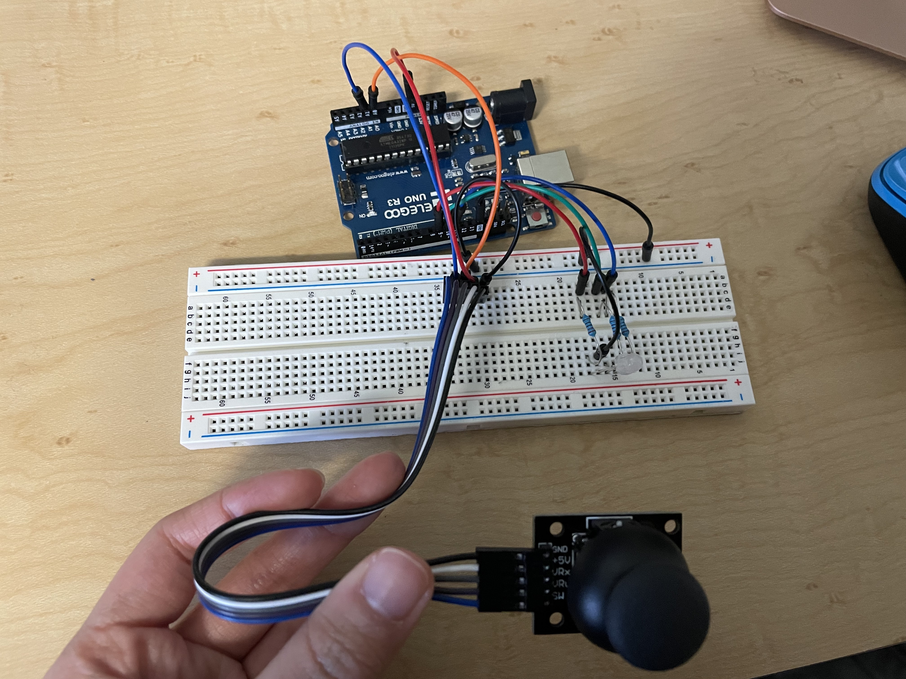
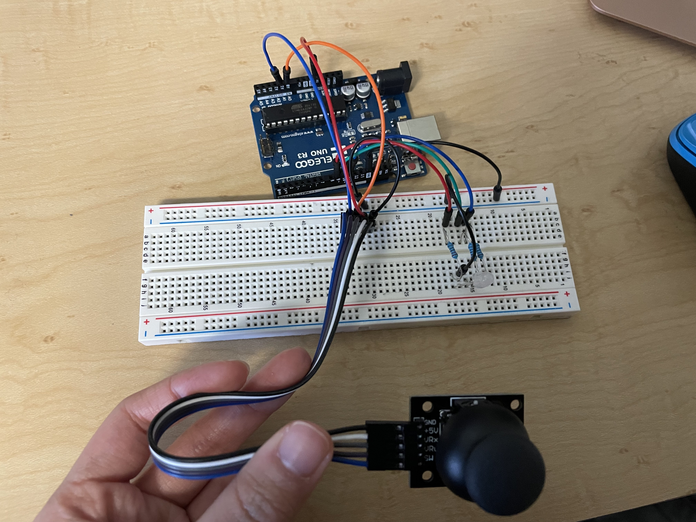

Michelle's Assignment 6!
This week I used my joystick and a whole bunch of other new stuff to move around a ball on a webpage! (I used P5.js and javascript).
Also, the 4 corners of the webpage all corresponded to a color switch on my RBG LED. This showed that information could go both from the arduino to the web, and back.
Here is the schematic for the board:
 

I used 3 220 ohm resistors for the RGB LED based on the calculations above.
The arduino code is below:
#include
const int x = A0;
const int y = A1;
const int R = 9;
const int G = 10;
const int B = 11;
void setup() {
pinMode(x, INPUT);
pinMode(y, INPUT);
pinMode(R, OUTPUT);
pinMode(G, OUTPUT);
pinMode(B, OUTPUT);
Serial.begin(9600);
Serial.setTimeout(10);
}
void loop() {
// read x and y values from joystick input
int xval = analogRead(x);
int yval = analogRead(y);
// format the xval and yval to be inside of brackets, for them to be parsed in javascript
Serial.print("[");
Serial.print(xval);
Serial.print(",");
Serial.print(yval);
Serial.println("]");
// if there's any serial input being received, store and print it
if (Serial.available() > 0) {
int inByte = Serial.read();
Serial.println(inByte);
// if the input received is a 1, turn the R LED on max (red)
if (inByte == 1) {
analogWrite(R, 255);
analogWrite(G, 0);
analogWrite(B, 0);
}
// if the input received is a 2, turn the B LED on max (Blue)
if (inByte == 2) {
analogWrite(R, 0);
analogWrite(G, 0);
analogWrite(B, 255);
}
// if the input received is a 3, turn the G LED on max (Green)
if (inByte == 3) {
analogWrite(R, 0);
analogWrite(G, 255);
analogWrite(B, 0);
}
// if the input received is a 4, turn the R and G LEDs to 225, and set B to 0 (Yellow)
if (inByte == 4) {
analogWrite(R, 225);
analogWrite(G, 225);
analogWrite(B, 0);
}
}
delay(50); // delay by 50 milliseconds
}
This is the code for the javascript for the webpage:
var serial; // variable to hold an instance of the serialport library
var portName = '/dev/tty.usbmodem11401' //port that the arduino is connected to
var dataarray = []; //some data coming in over serial!
function setup() {
serial = new p5.SerialPort(); // make a new instance of the serialport library
serial.on('list', printList); // set a callback function for the serialport list event
serial.on('connected', serverConnected); // callback for connecting to the server
serial.on('open', portOpen); // callback for the port opening
serial.on('data', serialEvent); // callback for when new data arrives
serial.on('error', serialError); // callback for errors
serial.on('close', portClose); // callback for the port closing
serial.list(); // list the serial ports
serial.open(portName); // open a serial port
createCanvas(1200, 800);
}
// get the list of ports:
function printList(portList) {
// portList is an array of serial port names
for (var i = 0; i < portList.length; i++) {
// Display the list the console:
print(i + " " + portList[i]);
}
}
function serverConnected() {
print('connected to server.');
}
function portOpen() {
print('the serial port opened.')
}
function serialError(err) {
print('Something went wrong with the serial port. ' + err);
}
function portClose() {
print('The serial port closed.');
}
function serialEvent() {
if (serial.available()) {
var datastring = serial.readLine(); // readin some serial
var newarray;
try {
newarray = JSON.parse(datastring); // can we parse the serial
} catch(err) {
//console.log(err);
}
if (typeof(newarray) == 'object') {
dataarray = newarray;
}
console.log("got back " + datastring);
}
}
function draw() {
// call the graphPos function with dataarray[0] and dataarray[1] as parameters
graphPos(dataarray[0], dataarray[1]);
}
function graphPos(xval, yval) {
clear();
background(0x08, 0x16, 0x40);
// map the range of the input to the window height:
var xPos = map(xval, 0, 1023, 0, width);
var yPos = map(yval, 0, 1023, 0, height);
// fill the ellipse with white
fill(255, 255, 255);
// create the ellipse to be 200 x 200, and to appear where the locations of xPos and yPos are
ellipse(xPos, yPos, 200, 200);
// call the changeLED function, which takes in xPos and yPos parameters
changeLED(xPos, yPos);
}
function changeLED(xPos, yPos) {
if (xPos <= 25 && xPos >= 0 && yPos <= 20 && yPos >=0) {
serial.write(1); // write 1 in serial if the joystick is in the upper left corner of the screen
}
if (xPos <= width && xPos >= width - 40 && yPos <= 40 && yPos >= 0) {
serial.write(2); // write 2 in serial if the joystick is in the upper right corner of the screen
}
if (xPos <= 40 && xPos >= 0 && yPos <= height && yPos >= height - 40) {
serial.write(3); // write 3 in serial if the joystick is in the lower left corner of the screen
}
if (xPos <= width && xPos >= width - 40 && yPos <= height && yPos >= height - 40) {
serial.write(4); // write 4 in serial if the joystick is in the lower left corner of the screen
}
}
This is the final product! I was super excited it worked because I was having random errors and tired of having so many things to save and close and restart, etc. I think it would be fun if I could get random colored balls to appear that our cursor ball could try to hit and change colors that way, too.